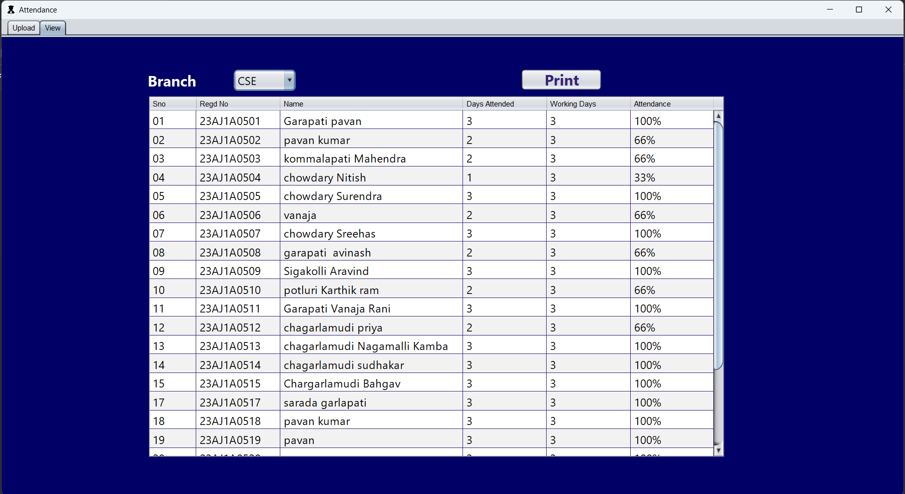
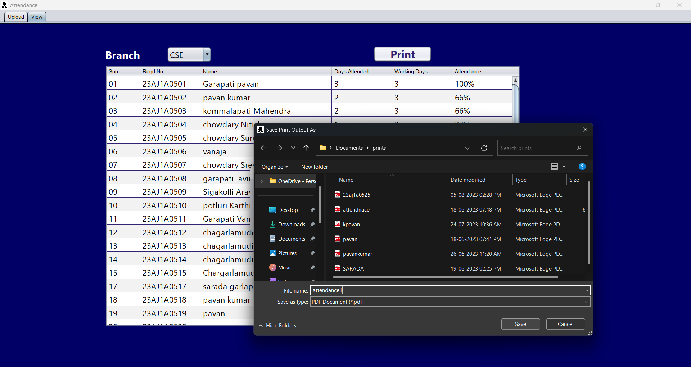
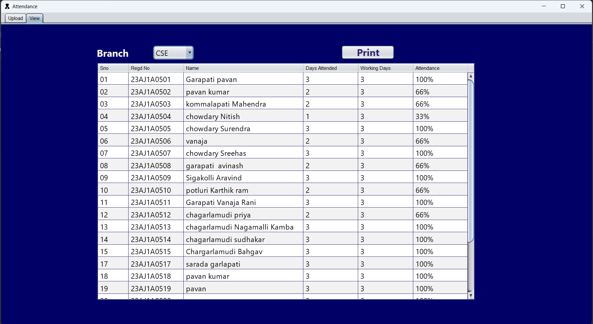
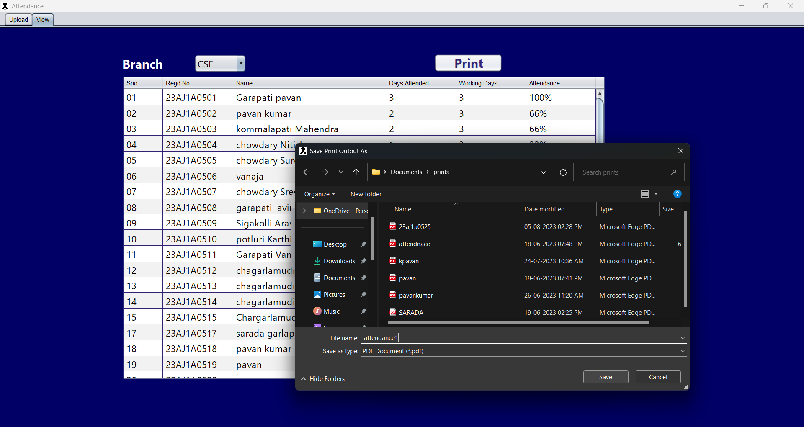

SIMS
Student Info Management System
| Project Name : | Student Info Management System |
| Abstract : | It's a GUI-based project used with the Swing module to manage the Student details and their attendance of an Institution. |
| Languages Used : | JAVA |
| IDE : | NetBeans |
| DataBase : | MySQL |
| Type : | Desktop Application |
| Author : | Garapati. pavan kumar |
 




Applications
Here are some specific ways that SIMS project could be used:
Schools
:Schools can use your SIMS project to track student enrollment, attendance, grades, and other important information. This information can be used to generate reports for parents and administrators, and to make informed decisions about student placement and curriculum development.
Colleges and universities
:Colleges and universities can use your SIMS project to manage student admissions, registration, financial aid, and academic progress. This information can be used to generate reports for accrediting agencies and government agencies, and to make informed decisions about resource allocation and academic programs.
Other educational institutions
:Other educational institutions, such as adult education programs and vocational training programs, can also use your SIMS project to manage their student information. Your SIMS project is a versatile tool that can be used by a variety of educational institutions to improve their efficiency and effectiveness. I am confident that your project will be a valuable resource for others.